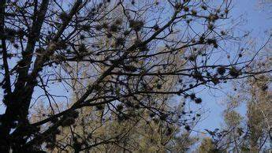

Qué Es El Heno Motita
El heno motita es un hongo que se instala en algunos árboles y roba nutrientes a su anfitrión, es una especie indicadora que toma sus nutrientes del medio ambiente y no de los árboles, contribuyendo a limpiar el aire al procesar metales pesados. Es importante no retirarlo en verano, cuando ha floreado y dado frutos, para evitar su propagación.
Propagación
El heno motita se cuelga de las ramas de los árboles, especialmente de los mezquites, a medida que crece, succiona la vida de la planta huésped al competir por la luz y el oxígeno. Esto dificulta la fotosíntesis, respiración y transpiración del árbol, provocando su debilitamiento y en ocasiones, su muerte, las semillas del heno motita son volátiles y se propagan fácilmente por el viento. Si se limpia un mezquite hoy, la plaga regresará al año siguiente debido a la dispersión constante de sus semillas y la plaga afecta tanto las partes altas como las bajas de los árboles. Incluso se ha extendido a los cables de electricidad en algunos municipios, como Ixmiquilpan y Cardonal.

Forma de controlarlo:
- Poda manual: Retira el heno motita de forma manual. Esto puede ser un proceso laborioso, pero es efectivo.
- Identificación de zonas afectadas: Determina las áreas donde el heno motita está presente y enfoca tus esfuerzos en esas zonas.
- Control manual regular: Inspecciona regularmente tus plantas en busca de heno motita y retíralo manualmente, esto es especialmente importante en las áreas donde la planta está más presente.
Conclusión
En resumen, el heno motita representa una amenaza real para los mezquites en Hidalgo, y su control requiere esfuerzos continuos y la participación de la comunidad.